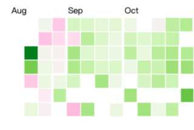
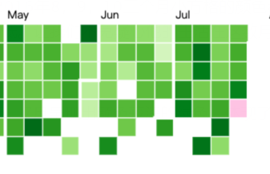
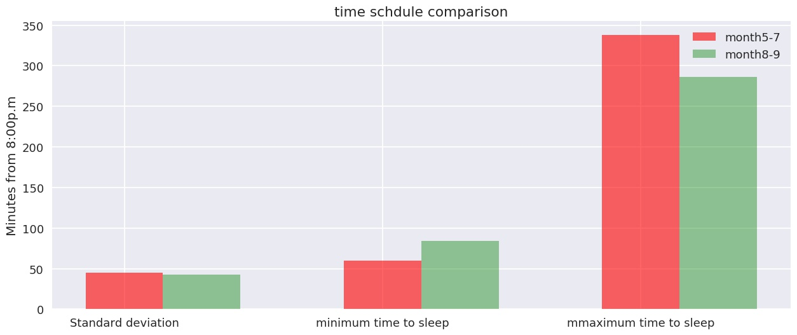

生活在英国Nelson的Dana Diotte是一位地球数学专家，同时也是一位网页开发者。2014年起，他开始使用iOS系统上的Sleep Cycle软件收集自己的睡眠数据。这一软件通过自行采集及使用者手动输入的方式，记录了入睡时间、起床时间、睡眠质量、睡眠时间、起床心情、睡前行为、心率等八类数据。
Dana的这一记录习惯一直保持到2018年，最终有间断地收集了八百余条睡眠数据。
以日历形式呈现Dana近五年的睡眠状况，如下图所示。图中每个小方格表示一天，通过颜色可直观看出睡眠软件监测出的Dana当天睡眠质量（从优到劣，由绿色向粉色过渡）。鼠标停留在每个方格上可显示当天的详细数据。
此外，在记录最初的一年多时间内，Dana还记录了自己的起床心情（Wake up）。这项数据以笑脸、平脸和哭脸的形式呈现在记录的表格上。
观察这一记录日历，我们可直观地看出2016年8，9，10三个月小方格的颜色都较浅，甚至出现了若干粉色块，即Dana的睡眠质量在这三个月中普遍偏低。让我们不免疑心他的生活在这数月中出现了一些变故。
而在这三个浅色月份之前的2016年5，6，7月呈现出颜色较深的绿色，体现了整体较高的睡眠质量，与之形成了鲜明的对比。
为了探索影响睡眠质量的因素，我们截取这两段时间进行对比分析。首先展示的是睡眠质量较低的8，9，10三个月的入睡时间，起床时间，间隔时间和绝对睡眠时间。
深蓝色条是结束时间相对于前天晚上八点的绝对值，蓝色条是入眠时间相对于前天晚上八点的绝对值。横轴坐标则是代表是第几天。 可以看出，在睡眠质量较低的8，9，10三个月，Dana惯常在十一点前入睡，六点半左右起床，睡眠时间平均是7.86个小时。
之后展示的是睡眠质量相对较高的5，6，7三个月，可以看到，Dana惯常在十一点半之前睡觉，睡眠时间大约是7.71个小时。
可以看出入睡时间上相比，质量低的时间段睡眠平均时长反而比质量高的时间段多，但是再比较它们的入睡时间的规律性，8-10月明显比5-6月睡眠要更加规律， 通过以上的对比分析，可以看出固定入睡时间可提高睡眠质量。
关于睡眠计划改变的原因，从以下统计数据中可以清楚看出，20%的男性会因身体原因影响睡眠计划，而38%的男性会被情绪原因影响。相比来说，女性更容易因身体和情绪的波动影响睡眠：她们中有37%的人会因身体原因影响入睡时间，更有近半数人会受情绪影响。
睡眠计划改变对男女心情和身体的影响
点击圆环切换身体/情绪
|
男性 |
女性 |
|
身体原因 |
身体原因 |
我们继续关心这数个月的睡前生活记录
7~9月睡前记录
5~7月睡前记录
容易发现7-8月相比5-7月，Worked out及Drink coffee出现的概率增加。分析可能Dana这段时间工作压力较大，沉重的工作压力导致睡眠质量较低。
让我们再来关注一下Dana2014年到2018年的睡眠时间，即Time in bed。参差不齐的竖条按时间顺序排列，长度对应时间时间，鼠标移上可看到详细数值。
点击查看睡眠时间《2018中国互联网网民睡眠白皮书》数据显示，中国互联网网民日常睡眠平均时长是7.1小时，而当我们扩大范围，放眼全球，我们发现南非是世界上平均睡眠时间最长的国家，南非的男性和女性分别以552分钟（9.20小时）和557分钟（9.28小时）夺下两个性别平均睡眠时间的榜首，而亚洲人的睡眠时间则明显较短，韩国男性以461分钟（7.68小时）遗憾位列倒数第一，而日本女性拥有所有分类里最短的平均睡眠时间，只有456分钟（7.60小时）。
从美国四个地理分区的平均睡眠时间分布来看，绝大多数美国人的睡眠时间都集中在6~8小时区间，其中更以7小时为最多。而睡眠时间仅4~5小时的比例也不容小觑。
虽然从Dana记录的数据中我们无从得知在睡眠质量不佳、睡眠时间较短的日子里，他有无采取药物手段辅助睡眠。但睡眠障碍已确确实实成为困扰现代人的一大心病。数据显示，在2012年，服用辅助药物助眠的丹麦人数量达到了3.64%,这一数据虽然随着时间呈缓慢下降趋势，但是依然保持在3%左右。睡眠，一场无声无息的战争，悄声在不少人的夜晚拉响了警报。
人生苦短，三分之一的时间都是花在睡眠上。现代社会巨大工作和生活压力问题使得睡眠问题已成为一个全球性课题。我们感谢Dana对自己睡眠数据的无私分享——数据无声，却能悄悄讲述睡眠的故事。愿越来越多的人意识到睡眠的重要性，规律作息，保证时长，少梦多安眠。